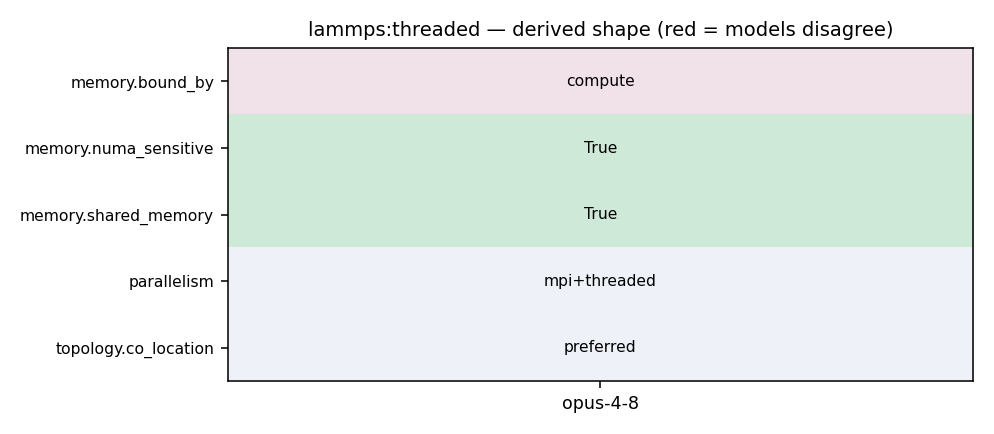

mpirun -np N lmp -sf omp -pk omp Nt -in in.reaxff
136 #pragma omp for schedule(guided) 137 #endif 138 for (i = 0; i < system->N; ++i) { 139 for (j = 0; j < nthreads; ++j) 140 rvec_Add(workspace->f[i], workspace->forceReduction[system->N*j+i]); 141 } 142 143 144 #if defined(_OPENMP)
27 Integration of the pair_style reaxff/omp into the OPENMP package 28 by Axel Kohlmeyer (Temple U.) 29 30 Please cite the related publication: 31 H. M. Aktulga, C. Knight, P. Coffman, K. A. O'Hearn, T. R. Shan, 32 W. Jiang, "Optimizing the performance of reactive molecular dynamics 33 simulations for multi-core architectures", International Journal of 34 High Performance Computing Applications, to appear. 35 ------------------------------------------------------------------------- */ 36 37 #include "pair_reaxff_omp.h"
132 133 pair_reax_ptr->reduce_thr_proxy(system->pair_ptr, 0, 1, thr); 134 135 #if defined(_OPENMP) 136 #pragma omp for schedule(guided) 137 #endif 138 for (i = 0; i < system->N; ++i) { 139 for (j = 0; j < nthreads; ++j) 140 rvec_Add(workspace->f[i], workspace->forceReduction[system->N*j+i]); 141 } 142 143 144 #if defined(_OPENMP)
119 } 120 } 121 122 #if defined(_OPENMP) 123 #pragma omp for schedule(dynamic,50) 124 #endif 125 for (i = 0; i < system->N; ++i) { 126 const int startj = Start_Index(i, bonds); 127 const int endj = End_Index(i, bonds); 128 for (pj = startj; pj < endj; ++pj) 129 if (i < bonds->select.bond_list[pj].nbr) 130 Add_dBond_to_ForcesOMP(system, i, pj, workspace, lists); 131 } 132 133 pair_reax_ptr->reduce_thr_proxy(system->pair_ptr, 0, 1, thr); 134 135 #if defined(_OPENMP) 136 #pragma omp for schedule(guided) 137 #endif 138 for (i = 0; i < system->N; ++i) { 139 for (j = 0; j < nthreads; ++j) 140 rvec_Add(workspace->f[i], workspace->forceReduction[system->N*j+i]); 141 } 142
20 Fix reaxff/bonds and fix reaxff/species for pair_style reaxff added 21 by Ray Shan (Materials Design) 22 23 OpenMP based threading support for pair_style reaxff/omp added 24 by Hasan Metin Aktulga (MSU), Chris Knight (ALCF), Paul Coffman (ALCF), 25 Kurt O'Hearn (MSU), Ray Shan (Materials Design), Wei Jiang (ALCF) 26 27 Integration of the pair_style reaxff/omp into the OPENMP package 28 by Axel Kohlmeyer (Temple U.) 29 30 Please cite the related publication: 31 H. M. Aktulga, C. Knight, P. Coffman, K. A. O'Hearn, T. R. Shan,
1048 my_sum += SQR(v[i]); 1049 } 1050 1051 MPI_Allreduce(&my_sum, &norm_sqr, 1, MPI_DOUBLE, MPI_SUM, world); 1052 1053 return sqrt(norm_sqr); 1054 }
119 } 120 } 121 122 #if defined(_OPENMP) 123 #pragma omp for schedule(dynamic,50) 124 #endif 125 for (i = 0; i < system->N; ++i) { 126 const int startj = Start_Index(i, bonds); 127 const int endj = End_Index(i, bonds); 128 for (pj = startj; pj < endj; ++pj) 129 if (i < bonds->select.bond_list[pj].nbr) 130 Add_dBond_to_ForcesOMP(system, i, pj, workspace, lists); 131 } 132 133 pair_reax_ptr->reduce_thr_proxy(system->pair_ptr, 0, 1, thr); 134 135 #if defined(_OPENMP) 136 #pragma omp for schedule(guided) 137 #endif 138 for (i = 0; i < system->N; ++i) { 139 for (j = 0; j < nthreads; ++j) 140 rvec_Add(workspace->f[i], workspace->forceReduction[system->N*j+i]); 141 } 142